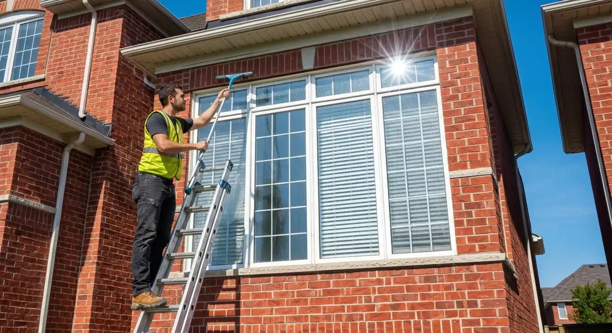
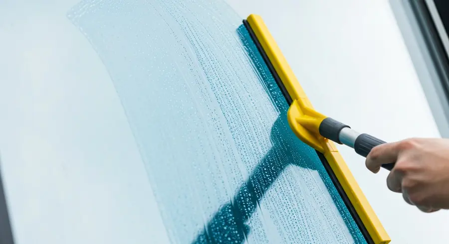
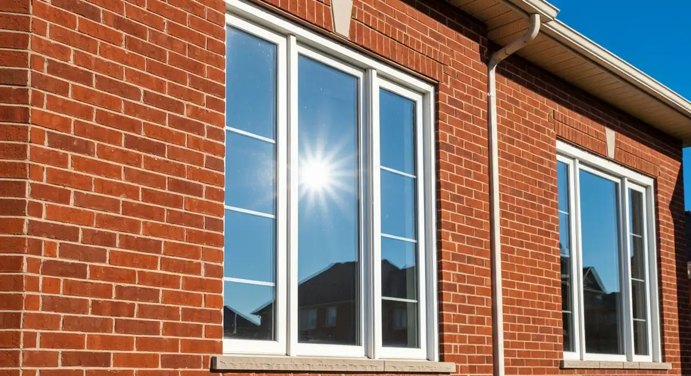
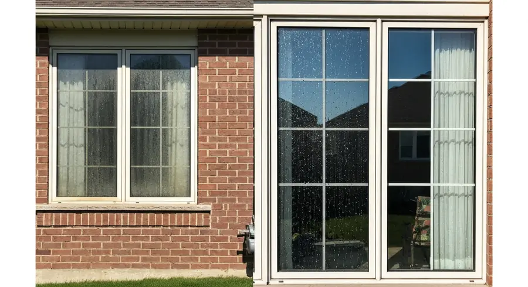
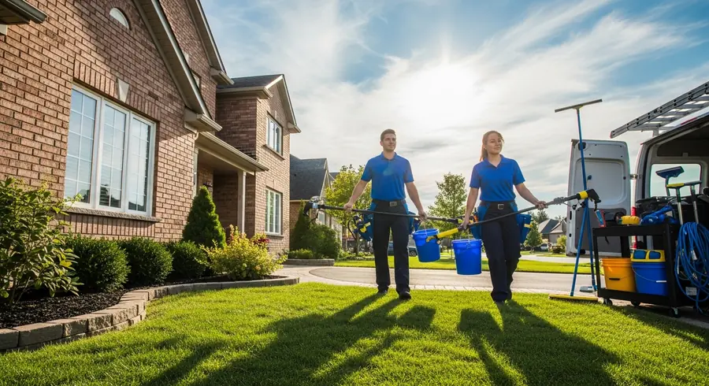

Streak-free window cleaning for Guelph homes and businesses. Interior, exterior, tracks, and screens.
Streak-free exterior window cleaning using professional squeegees and pure water systems for spot-free results.
Full interior window cleaning with sills, frames, and tracks wiped down — not just the glass.
Window screens removed, brushed, washed, and reinstalled. Screens cleaned separately from glass for best results.
Office buildings, storefronts, and commercial properties — regular maintenance programs and one-time cleans.
New build and renovation cleanup — sticker removal, plaster spots, paint overspray, and construction residue.
Mineral deposit and hard water stain removal from glass that regular cleaning can't touch.





Professional tools and technique — not a rag and spray bottle
Glass, frames, sills, tracks, and screens all cleaned
Interior and exterior on the same visit — fully coordinated
Guelph window cleaners — familiar with local hard water issues
Clean windows change how a home feels inside and looks outside. Natural light comes through at full brightness, views are unobstructed, and the home presents well from the street. Yet window cleaning is one of those tasks that's easy to defer — it requires the right equipment, the right technique, and for higher or difficult windows, the right safety approach. Professional window cleaning delivers results that DIY methods typically don't.
Guelph's water supply is relatively hard, which means mineral deposits accumulate on windows over time, especially on the exterior surfaces that get direct rain splash and irrigation overspray. Light mineral deposits clean off with a standard professional window cleaning. Heavy or long-standing deposits require an acid-based mineral deposit remover applied before the main clean. Left untreated, mineral deposits eventually etch into the glass surface and can become permanent.
Pure water systems — using water purified to near-zero total dissolved solids and applied through water-fed poles — have become the standard for exterior cleaning on accessible windows. The pure water carries no minerals, so when it evaporates it leaves no spots. This is particularly effective for Guelph homes given the hard water issue. For high windows, water-fed poles extend to significant heights without ladders.
Screen cleaning is often the most impactful element of a window clean that homeowners underestimate. Screens accumulate years of pollen, dust, and debris that diffuses light and colours the view. Screens cleaned and reinstalled separately from the glass make a dramatic visible difference in how much light enters the room.
Commercial window cleaning frequency depends on the property type. Street-level retail and restaurant windows attract more finger marks, food residue, and general grime and typically need cleaning every 2–4 weeks. Office buildings and upper floors might be done quarterly or bi-annually. We offer maintenance programs with scheduled visits.
We serve Guelph, Fergus, Elora, Rockwood, Cambridge, and all of Wellington County.
We provide window cleaning services throughout Guelph and the surrounding region:
Professional window cleaning in Guelph for a typical residential home runs $150–$350 for exterior only, $220–$450 for interior and exterior combined. Price depends on the number of windows, storey count, and screen cleaning. We quote per-window or per-job after a quick assessment.
Twice a year is the standard recommendation for residential windows in Guelph — once in spring after tree pollen, once in fall before winter. Homes near busy roads, or with hard water irrigation may benefit from three times per year.
Yes — we use water-fed pole systems that reach second and third storey windows from the ground without ladders, and traditional ladder work where required. We assess access at the quote stage and advise on which method is appropriate and safe.
Yes — a full window cleaning includes the glass, frames, sills, and tracks on interior windows. Neglected tracks accumulate significant debris that can prevent windows from operating properly and harbour mould. We include this as standard, not as an upsell.
We can remove most hard water mineral deposits using professional acid-based removers applied before the standard clean. Very severe or long-standing deposits that have etched into the glass may not be fully removable — we assess and advise honestly on what's achievable.
Yes — we clean offices, storefronts, restaurants, and commercial buildings. We offer both one-time and scheduled maintenance programs. For businesses that need documentation or specific scheduling requirements, we accommodate those.
Contact us today for a free, no-obligation quote for window cleaning services in Guelph.